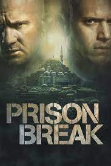
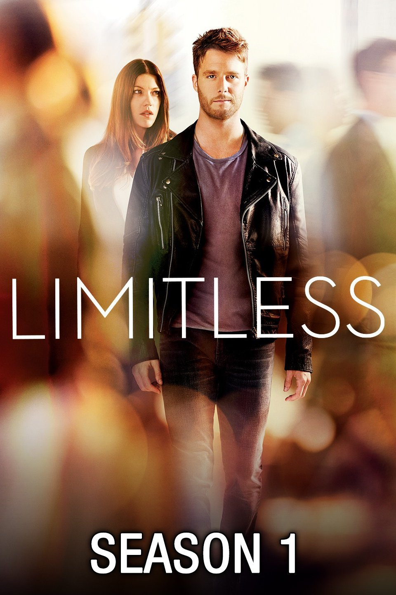
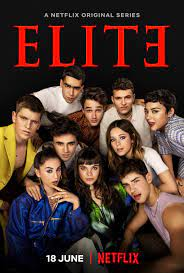
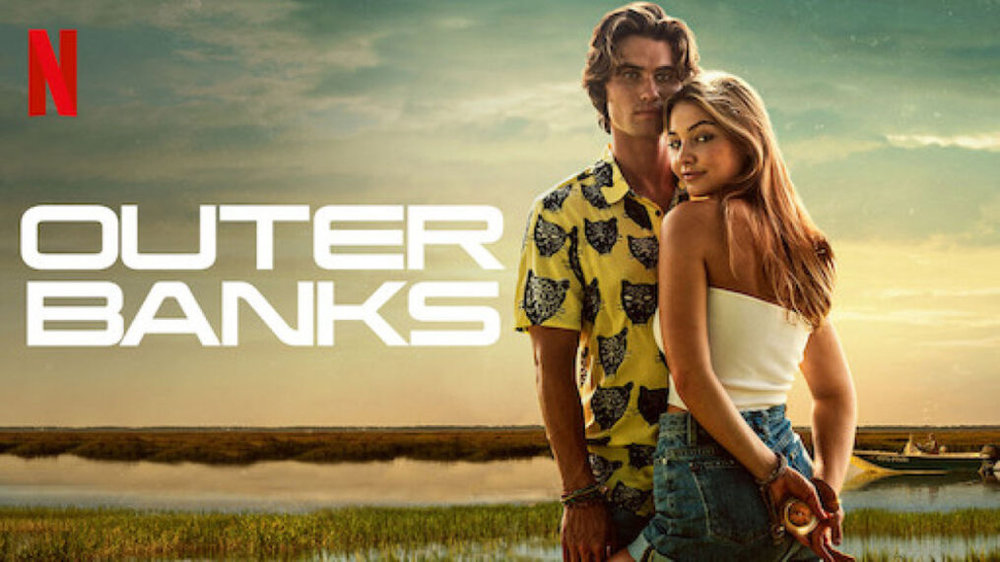
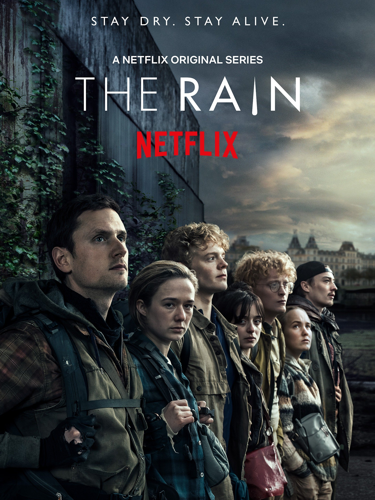

| TITLE |
THUMBNAIL |
YEAR |
IMDb RATING |
ACTORS |
REVIEW |
| Prison Break |
 |
2005-2017 |
8.3 |
- Wentworth Miller
- Dominic Purcell
- Sarah Wayne Callies
- Robert Knepper
- Amaury Nolasco
|
- ... and in sequence... Quite an ordeal, I would say, but digital television and Internet are presently of great help. For almost half-a- year, it seemed that prisoners and wardens were part of my family entertainment :)
|
| Friends |
 |
1994-2004 |
8.8 |
- Jennifer Aniston
- David Schwimmer
- Lisa Kudrow
- Matthew Perry
- Courteney Cox
|
- Very funny and, as someone who was in my twenties when the show started, incredibly relatable. Sure, it does present a stylized and almost idealistic picture of being a young, single adult, but that's part of its charm.
|
| The Vampire Diaries |
 |
2009-2017 |
7.7 |
- Nina Dobrev
- Ian Somerhalder
- Paul Wesley
- Kat Garaham
- Candice King
|
- This is my favorite of the CW lineup now and the my pick for the best of the supernatural & vampire shows out there. The cast is super attractive and there is lots of excitement each week.
|
| The Originals |
 |
2013-2018 |
8.2 |
- Joseph Morgan
- Daniel Gillies
- Phoebe Tonkin
- Charles Michael Davis
- Claire Holt
|
- Never could get into Vampire Diary's but The Originals I just loved. And in season two, along came Yusuf Gatewood, just the most beautiful man, simply gorgeous. Kind of put Marcel in the shade.
|
| Bones |
 |
2005-2017 |
7.8 |
- Emily Deschanel
- Michaela Conlin
- David Boreanaz
- T. J. Thyne
- Tamara Taylor
|
- Generally I'm not a fan of procedurals (shows without a continuing story, where each episode stands on it's own and is about 'procedure'; legal, medical, etc), but this is as close to an exception as I'll get.
|
| Peaky Blinders |
 |
2013- |
8.8 |
- Cillian Murphy
- Tom Hardy
- Helen McCrory
- Annabelle Wallis
- Joe Cole
|
- A dull, slow story wrapped in many layers of cosplay. And the whole thing is the scenes, because the story is quite useless. The acting is decent, but the characters are all 21st century people. So, no, the acting is crap too given the story.
|
| Limitless |
 |
2015-2016 |
7.7 |
- Jake McDorman
- Hill Harper
- Bradley Cooper
- Colin Salmon
- Ron Rifkin
|
- Jake McDorman is pleasant enough to watch as an everyday Joe stumbling upon unique gifts. Jennifer Carpenter has an interesting face though she is highly improbable as a romantic interest. Bradley Cooper does add a bit of gravitas to the show being all A list now.
|
| Elite |
 |
2018- |
7.4 |
- Aron Piper
- Miguel Bernardeau
- Ester Exposito
- Itzan Escamillia
- Danna Paola
|
- This new Spanish series is excessive, yes, but it is well directed and has such a great technical approach as well as being very, very entertaining.
|
| Outer Banks |
 |
2020- |
7.6 |
- Madelyn Cline
- Chase Stokes
- Rudy Pankow
- Madison Bailey
- Drew Starkey
|
- This show is awesome. I'm hooked. Great story and cast. Perfect show to binge watch during the quarantine. I highly recommend checking it out. 10 stars
|
| The Rain |
 |
2018-2020 |
6.3 |
- Alba August
- Angela Bundalovic
- Natalie Madueno
- Jeessica Dinnage
- Evin Ahmad
|
- This is an excellent, inherently honest series that has an emotional and intellectual maturity you do not often see in series of this kind. The characters are real people, not the juvenile, shallow card board cut outs, you find in many US series cast in a similar vein.
|